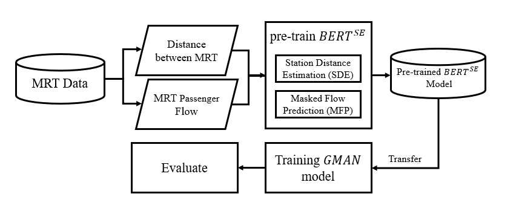

要解決的問題
旅客流量估計需表達隨時間變動的交通關係。
輸入、處理與產出
- 輸入
- 車站距離、歷史流量與隨時間改變的旅運情境。
- 處理方式
- 以動態預訓練表示學習不同時段的車站關係，再提供下游流量估計模型。
- 產出
- 方法比較、模型與實驗，形成IIAI AAI論文及團隊論文獎。
適用範圍
本人負責方法、資料、模型與實驗；共同作者成果不改寫成個人獨著。
相關案例
成果與驗證
形成 IIAI AAI 2021 正式論文及 Competitive Paper Award。
動態嵌入
論文
研究動態嵌入方法在旅客流量估計中的應用。

旅客流量估計需表達隨時間變動的交通關係。
本人負責方法、資料、模型與實驗；共同作者成果不改寫成個人獨著。
形成 IIAI AAI 2021 正式論文及 Competitive Paper Award。
動態嵌入